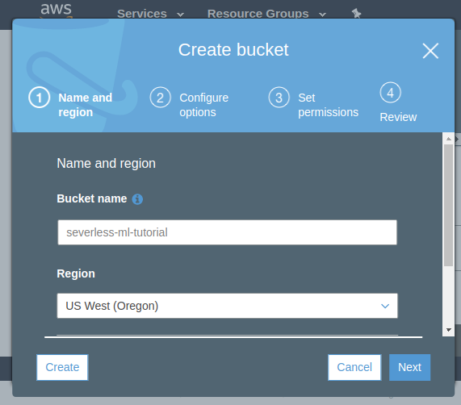
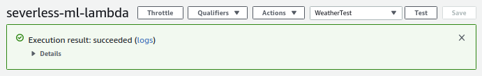
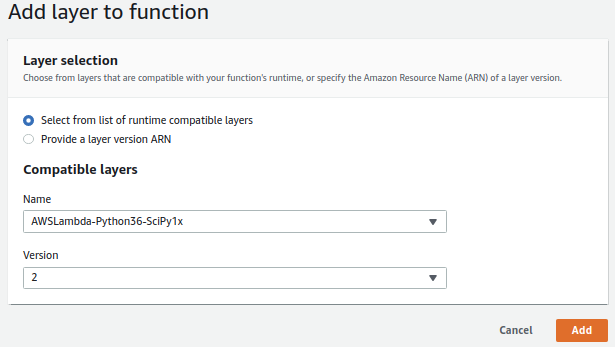

Introduction
Working day in and day out wrangling data sets, engineering interesting features and testing and training heaps and heaps of models can leave you feeling a bit disconnected from real-world systems. Well, it can for me at any rate. Recently I've spent time with some software engineers who've helped me understand how ML models can be deployed in the cloud by leveraging severless architectures, at little or no cost. As a result, models or ensembles of models can fit into larger systems via simple API calls.
Using AWS Lambdas, we dont need to keep costly EC2 instances up and running 24/7. Lambdas spin up really fast as required. (Google Cloud have a similar offering called Cloud Functions but here I'll be focussing on the AWS offering.) In the background of course they are all running on EC2 servers but Lambdas are so abstracted away from them that you dont need to bother about the EC2s. There are many good reasons to think go serverless but I dont want to run an advert. You can read more here
A Lambda is essentially a small fast container preconfigured with one of a number of different runtimes. These include:
- several Node.js variants
- Go 1.x
- Various Python releases
- And numerous others
As a data scientist I work principally with Python these days and in this tutorial I'll walk you through deploying a simple ML model in an AWS Lambda. There is an accompanying github repo here which includes all the code you'll need along with the model, data and training data.
The Model
This is not an exercise in training a great model. As a use case I used historical weather data for Cape Town to train a model to predict the likelihood of rain tomorrow based on Cape Town's history. you can feed it any city in the world, and it will predict whether it will rain there tomorrow based on Cape Town's history. That's ok, it's not really the point.
The Point
If you are unfamiliar with Lambdas or dissilusioned with the costs of housing your Docker Containers on EC2 instances, hopefully this will give you an idea of how cheap and easy it can be to think about larger more complex systems of models and code. With luck your creative juices will be stimulated.
Requirements
This looks a little tedious but is worth figuring out. Much of it you will only need to do once. I'll gloss over some things here like AWS execution roles and key management. Additionally the tutorial will use both the AWS web console and the CLI. If youre unfamiliar with the CLI, hopefully this will be an easy introduction to it.
Python 3.6
We will use the Python 3.6 Lambda runtime environment as this runtime comes with a preconfigured layer containing scipy/numpy. Because these packages have OS dependencies not present in the Lambda environment by default, this layer is critical for us to use any of the low level math functions such as those in SKLearn. I see that the Python 3.7 runtime also has a scipy/numpy layer now!
Docker
In order to build layers we need to install Python packages locally in an environment that matches the Lambda's remote environment. Solution: Docker how to install
If you're in Ubuntu, this should get you going:
sudo apt-get remove docker docker-engine docker.io
sudo apt install docker.io
sudo systemctl start docker
sudo systemctl enable docker
Github repo
A github repo is available for this tutorial. Directory structure is important and I'll assume youre running commands from the project root.
- project root/
├-layers/
| ├-02_dependencies/
| | └-requirements.txt
| |-03_rain_model/
| | ├-models/
| | | └-rf_rain.pkl
| | └-keys.csv.template
| ├-zips/
| └-model_training/
├-readme.md
└-rain_forecast.py
Darksky
You'll need a free account here in order to query weather data.
Sign up at https://darksky.net/dev. After signup and login, your home page should show you your secret key. Store this in layers/03_rain_model/keys.csv.
LocationIQ
Sign up for a free account at Location IQ https://locationiq.com for geocoding. Create an Access Token and store this in layers/03_rain_model/keys.csv.
AWS Setup
Account
If you haven't already, set up your free AWS account.
Install AWS CLI
AWS CLI provides command line access to AWS. You need to install it, typically with pip, and configure it for use with your AWS account.
TLDR Ubuntu version check these instructions for other systems and troubleshooting:
# install
pip3 install awscli --upgrade --user
# check (might need to log in to ubuntu again)
aws --version
Configure
We'll need to use the console to configure AWS CLI.
Logged in to the AWS console:
- Top right, click the dropdown under your name > My Security Credentials
- Select “Access keys (access key ID and secret access key)”
- “Click Create New Access Key”
- Download the csv with your key and secret key and save somewhere safe
Back to your terminal (detailed instructions):
$ aws configure
AWS Access Key ID [None]: ABABABABAEXAMPLE
AWS Secret Access Key [None]:CDCDCDCDCDCDCDCDCDCDCEXAMPLEKEY
Default region name [None]: us-west-2
Default output format [None]: json
Create an S3 bucket for the project
Back to the web console, S3 section, create an empty bucket for this project. Bucket names have to be unique across all buckets so call this something you can remember. You can of course also get this done with the CLI.
I'll call mine severless-ml-tutorial in US West Oregon (to match our config). you'll need to adjust the code below to match this name.
I think this is the only place you could potentially incur some costs. S3 storage is not free, although at this scale it is very cheap. After building your layers delete this bucket to save potential costs. I have a couple buckets with a few MB inside and I havent incurred a cost yet. It's a little confusing.

Lambdas
Still there? well done! Ok lets build our first simple Lambda. We will expand on it later.
Create a Lambda
- In the AWS Console, click ‘Services’ > ‘Lambda’.
- Click on ‘Create function’ to create a new Lambda function.
- Call it
severless-ml-lambdaand select the Python 3.6 Runtime. Leave the Permissions options set to default. - Click on ‘Create function’ at the bottom.
- Call it
- Your Lambda will be created and it's properties screen will open.
Add an API Gateway trigger
Now we will configure an http gateway where we can interact with our new Lambda.
- In the Designer panel click ‘Add trigger’
- Select ‘API gateway’
- API dropdown > ‘Create new API’
- From ‘Choose a template’ select ‘Rest API’
- Security dropdown > Open
- Additional settings - default
- click “Add”
Add a test event
Now we add an example query so that we can test how our Lambda will respond to API calls. We will be sending our Lambda the name of a city so lets set up a test event to do that.
- At the top of the screen in the ‘select a test event’ dropdown select configure test events
- enter a name, eg. ‘WeatherTest’
- enter the following json, mimicking an https event submitting the “city” string “Los Angeles”.
{
"httpMethod": "GET",
"queryStringParameters": {
"city": "Los Angeles"
}
}
Add some code
Now at last we can add some code. This is extremely simple, It assigns the incoming string to a variable, prints it out and returns a formatted HTML string containing the string.
- Designer panel
- highlight your Lambda name
- Scroll down to Function code panel
- Paste the following code into the code block (we'll need all those libraries later):
import json
import pandas as pd
from pandas.io.json import json_normalize
pd.set_option("display.max_columns", 20)
pd.set_option("display.width", 1000)
pd.set_option("display.max_colwidth", -1)
import requests
import pickle
import sklearn
import boto3
import datetime as dt
from decimal import Decimal
def lambda_handler(event, context):
# 01 Code start
#---------------
# get the city name from the query string
try:
city = event["queryStringParameters"]["city"]
except:
city = "Cape Town"
# print the city value
print("city: " + city)
# build a success string
success = "<h1>City: " + city.title() + "</h1>"
# send the output to the browser
return {
'statusCode': 200,
'body': success,
"headers": {
'Content-Type': 'text/html',
}
}
- Near the top of the page again, click Save and then Test.
- with some luck your Lambda just executed the payload you sent with your WeatherTest json.
- The result should show up in the green panel near the top of the page.
- You can see the result of the Python print function in there too.

- Test the Lambda as a URL
- In the Designer panel click the API Gateway block, scroll down to the API Gateway panel url and click the url next to API Endpoint.
- Add
?city=Hong Kongto the end of the url. hit enter and you should see the page contents update to reflect this new querystring.
You have now got a simple Lambda, accessible via a URL, you can send it a payload, and it can process and return the payload, in this case as an HTTP response.
Extenting the Lambda
layers
Before we add more code to do more interesting things, lets make our Lambda architecture a little more powerful. We can do this by adding layers. Layers are simply additional resources youre including in your Lambda container - There are size constraints to deal with so dont go too crazy.
After this section we can get back to the code and extend the Lambda. If you have the github repo you'll see that I have the files required to build each layer nested within a layers directory.
Typically we need to collate the contents of each layer, upload them to S3, compile the contents into Lambda layers and then attach the layers to our Lambda.
01 Scipy/Numpy layer
This layer is precompiled by AWS and includes not only python libraries but also system libraries that we need to use. This is a really difficult layer to build for yourself but thankfully AWS have done the heavy lifting for us. We dont need to build this layer.

02 Dependencies layer
This layer will include all of the required Python libraries betond those installed by default. We will collate the contents of this layer on our local machine using a docker container that resembles the Lambda environment, namely lambci. From within lambci container, we can use pip to install the libraries to a local directory, outside of the container. We then use this directory to build our new layer.
In the terminal, from the project root:
docker run --rm -it -v ${PWD}/layers/02_dependencies:/var/task lambci/lambda:build-python3.6 bash
# From the docker container, install the python packages
pip install -r requirements.txt --target python/lib/python3.6/site-packages/ --no-deps --ignore-installed
exit
If that worked as expected you should now see a ‘python’ directory inside your ‘02_dependencies’ layer directory.
Zip the layer contents
We need to compress the layer contents in preparation for uploading to S3.
# clear any old versions first
rm layers/zips/02_dependencies.zip
pushd layers/02_dependencies
zip -r ../zips/02_dependencies.zip python
popd
Upload the layer to S3
Using the AWS CLI instead of the web Console, sync the contents of your zips directory with a location in S3. It's a good idea to keep the web console open to see that what youre doing is having the desired effect.
aws s3 sync layers/zips s3://severless-ml-tutorial/lambdas/layers --delete
Build/update layer 02_dependencies
Now we can use the uploaded zip file to update or create a Lambda layer that can be used in any Python 3.6 Lambda. Remember to change the name of your bucket next to S3Bucket=.
aws lambda publish-layer-version --layer-name weather_02_dependencies --description "dependencies layer" --content S3Bucket=severless-ml-tutorial,S3Key=lambdas/layers/02_dependencies.zip --compatible-runtimes python3.6
03 Rain model layer
The files for this layer already exist on the layers/03_rain_model/ directory, so no Docker hijinks needed here.
You need to put your api keys into the file called keys.csv.template and rename it to keys.csv.
Despite the name and main purpose of the layer, I'll include the API keys in addition to the model object. NB This is NOT the correct/secure way to manage keys in the cloud.
DON'T DO THIS WITH IMPORTANT KEYS!
Zip the layer contents
We need to compress the layer contents in preparation for uploading to S3.
# clear any old versions first
rm layers/zips/03_rain_model.zip
pushd layers/03_rain_model/
zip -r ../zips/03_rain_model.zip .
popd
Upload the layer to S3
As before, upload the layer contents to S3…
aws s3 sync layers/zips s3://severless-ml-tutorial/lambdas/layers --delete
Build/update layer 03_rain_model
… and build the layer. Remember to change your bucket name here.
aws lambda publish-layer-version --layer-name weather_03_model --description "model layer" --content S3Bucket=severless-ml-tutorial,S3Key=lambdas/layers/03_rain_model.zip --compatible-runtimes python3.6
Check that layers have been succesfully created
Use the AWS web console to make sure layers exist.
- S3 section
- Confirm that layer zip files exist in S3.
- Lambdas section
- Confirm that new layers have been created.
- Services > Lambda > Layers > …
- Each time you update an existing layer it will get a new version.
Add the new Layers to your Lambda
We will add all the required layers to our Lambda and then we're done with the set-up.
- In the web console, open your Lambda
- Services > Lambda > click serverless-ml-lambda
- In the Designer pane, click ‘Layers’.
- Scroll down to the Layers pane and using the ‘Add a layer button, add the latest versions of the following 3 layers:
- AWSLambda-Python36-SciPy1x version 2
- Python 3.6 numpy/scipy + OS deps layer)
- weather_02_dependencies
- Our Python libraries dependencies weather_02_dependencies
- weather_03_model
- Our random forest model and keys file layer weather_02_model
- AWSLambda-Python36-SciPy1x version 2
Dont forget to click Save!
That's it for the set-up. If you've gotten this far well done! Writing this out, it seems very long. All that's left now is to build out the code!
Build out the code
Each of the following steps expands on the code from the previous step. To follow along and see how the functionality grows, add each block of code to the bottom of the previous, overwriting the previous code's return braces. After updating and saving at each step, reload the API endpoint URL and submit a different city if you'd like.
Alternatively, find the full code in severless-ml-lambda.py.
Add geolocation
This block loads up the API keys and uses the LoationIQ key to geocode the city you submitted. These results are printed and returned via http.
# paste over previous return {...}
# 02 Code start
#---------------
# retrieve our API keys for LocationIQ and DarkSky
# this is definitely not the best way to store keys. But these aren't too important so it doesn't matter
keys=pd.read_csv("/opt/keys.csv")
# keys = pd.read_csv("layers/03_rain_model/keys.csv") # local keys - put yours here
lociq_api = keys["lociq_api"][0]
darksky_api = keys["darksky_api"][0]
print("LocationIQ API key: " + lociq_api)
print("DarkSky API key: " + darksky_api)
# use LocationIQ to do geolocation
lociq = "https://eu1.locationiq.com/v1/search.php?key=" + lociq_api + "&q=" + city + "&format=json"
lociq_info = requests.get(lociq)
lat = json.loads(lociq_info.content)[0]["lat"]
lon = json.loads(lociq_info.content)[0]["lon"]
print("Lat: " + str(lat))
print("Lon: " + str(lon))
# build a success string
success = success + "Latitude: " + str(lat) + "</br>Longitude: " + str(lon) + "</br>"
# overwrite this block with next step.
# send the output to the browser
return {
'statusCode': 200,
'body': success,
"headers": {
'Content-Type': 'text/html',
}
}
Add weather query
This code takes the DarkSky key and the LocationIQ GPS co-ordinates and returns the current weather conditions for the city you submitted.
# paste over previous return {...}
# 03 Code start
#---------------
# Retrieve the current weather conditions from Dark Sky
darksky = "https://api.darksky.net/forecast/" + darksky_api + "/" + str(lat) + "," + str(lon) + "?exclude=minutely,daily,hourly,alerts,flags"
darksky_response = json.loads(requests.get(darksky).content)["currently"]
weather_df = json_normalize(darksky_response, sep="_")
print("Weather:")
print(weather_df)
# build a success string
success = success + "<h2>Current weather</h2>" + weather_df.to_html() + "</br></br>"
# overwrite this block with next step.
# send the output to the browser
return {
'statusCode': 200,
'body': success,
"headers": {
'Content-Type': 'text/html',
}
}
Add model prediction
Add this code block to load up the model you pushed in layer 3 and make a prediction about weather it might rain tomorrow.
NB you will run into memory errors when you test this. Scroll down to Basic settings panel and increase your Lambda's memory to 1024 Mb. While youre there increase your timeout to 10 sec.
# paste over previous return {...}
# 04 Code start
#---------------
# prep the data for the model, load the model and make a prediction
x = weather_df[['apparentTemperature', 'cloudCover', 'dewPoint', 'humidity','ozone', 'pressure', 'temperature', 'uvIndex', 'visibility','windBearing', 'windGust', 'windSpeed']]
# load the model from disk, do prediction
filename = "/opt/models/rf_rain.pkl"
# filename = "layers/03_rain_model/models/rf_rain.pkl" local copy
rf_rain = pickle.load(open(filename, 'rb'))
# predictions
probs = rf_rain.predict_proba(x)
p_rain = probs[0][1]
pred = rf_rain.predict(x)
pred_str = "No" if pred[0] == 0.0 else "Yes"
print("Rain? " + pred_str)
print("Rain probability: " + str(p_rain))
# build a success string
success = success + "Will it rain tomorrow? " + pred_str + "</br>probability of rain: " + str(p_rain) + "</br>"
# overwrite this block with next step.
# send the output to the browsert
return {
'statusCode': 200,
'body': success,
"headers": {
'Content-Type': 'text/html',
}
}
Add writing to S3
This last step writes the results of each query out to S3. It's really just a little extra to show how simple it can be to intract with the AWS infrastructure from Python and Lambdas.
# paste over previous return {...}
# 05 Code start
#---------------
# write something about the query to DynamoDB and S3
# prep the data we want to write
# store the timestamp
ts = int(weather_df["time"][0])
# add predictions to df and make legible time
weather_df["datetime"] = str(dt.datetime.fromtimestamp(weather_df["time"]))
weather_df["prob_rain"] = p_rain
weather_df["pred_rain"] = pred_str
# convert pandas to json
weather_json = json.loads(weather_df.to_json(orient='records'), parse_float=Decimal)[0]
table.put_item(
Item={
partition_key: city.title(),
sort_key: ts,
data_key: weather_json
}
)
# build a success string
success = success + "DynamoDB write success? I think so...</br>"
# S3
# keeping this mega simple. This will write a file with the name: timestamp_city.csv to your bucket.
# overwites are possible and im not trying to append.
# pandas and AWS make it very easy to write csv
bucket_name = "severless-ml-tutorial"
filename = str(ts) + "_" + city.lower().replace(" ", "_") + ".csv"
weather_df.to_csv("s3://" + bucket_name + "/lambdas/" + filename, index=False)
# build a success string
success = success + "S3 write success? I think so...</br>"
# send the output to the browser
return {
'statusCode': 200,
'body': success,
"headers": {
'Content-Type': 'text/html',
}
}
Conclusion
Admittedly that was quite a long tutorial. Hopefully it has illustrated how a trained model can be incorporated into a larger codebase by using serverless functions. Enjoy.
comments powered by Disqus